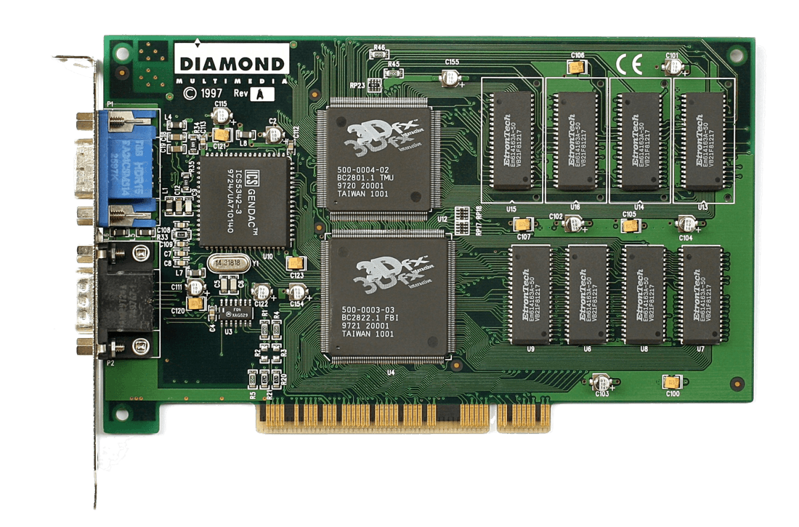
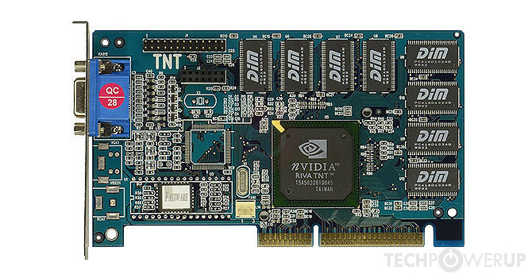
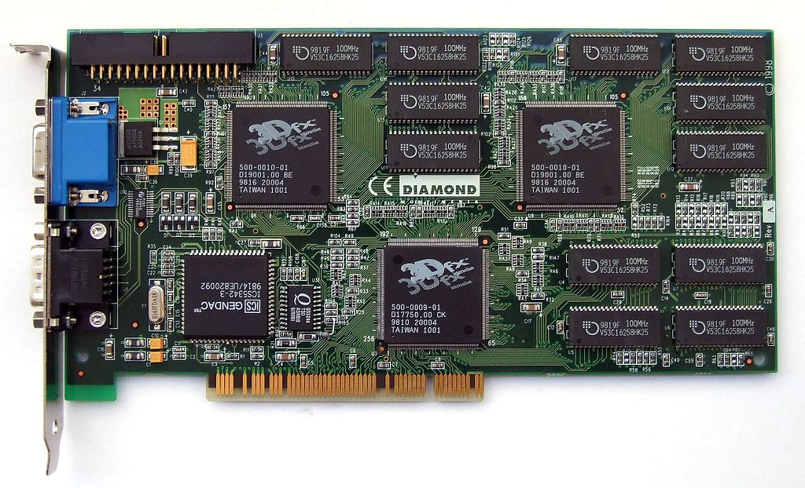
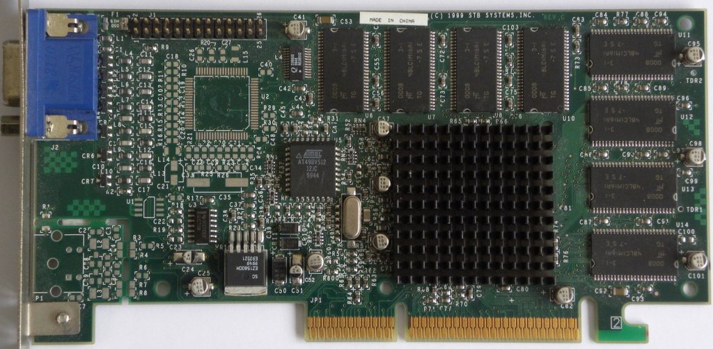

Voodoo 1
 Fundada por Ross Smith, Gary Tarolli y Scott Sellers (todos antiguos alumnos de SGI). En 1996 lanzaron al mercado su famoso chip Voodoo Graphics. Por entonces, la compañía sólo fabricaba chips y placas de referencia, no vendía productos al consumidor. Actuaban como proveedor OEM de compañías de tarjetas gráficas, las cuales diseñaban, fabricaban y comercializaban sus propias tarjetas con los chips Voodoo en base al diseño referencial que dictaba la compañía. El chip Voodoo 1, como más tarde sería conocido el Voodoo Graphics, carecía de uso en modo 3D, razón por la cual las tarjetas aceleradoras seguían requiriendo la existencia en el sistema de una tarjeta VGA 2D primaria. Situadas en una ranura PCI distinta, se conectaba a la tarjeta VGA a través de un cable VGA (la tarjeta VGA se conectaba a la tarjeta Voodoo y esta al monitor), y sólo entraba en funcionamiento cuando se ejecutaba un juego 3D programado para el uso de la misma. Los principales rivales en sus comienzos fueron PowerVR y Rendition. La primera seguía el mismo estilo que las Voodoo, creando tarjetas independientes de la tarjeta VGA, mientras que Rendition sí ofrecía una solución que integraba ambos chips en la misma tarjeta. Sin embargo, ninguno de sus competidores alcanzó la popularidad entre jugadores y desarrolladores que lograron las tarjetas con chip Voodoo. Driver Glide Para asegurar el mejor rendimiento, 3dfx desarrollo una API propietaria denominada Glide para que los desarrolladores de videojuegos la utilizaran al programar videojuegos 3D. Se trataba, en esencia, de un pequeño subconjunto de OpenGL implementado en el hardware. Glide proporcionaba acceso directo al hardware interno de las Voodoo a los programadores. Esta estrategia difería de la seguida por otras APIs 3D de la época (Direct3D, OpenGL y QuickDraw 3D), una interfaz estándar independiente del hardware. La principal ventaja de disponer de una capa de abstracción es que los desarrolladores de videojuegos no tienen que escribir el código en función de distintas APIs, sino que la propia capa de abstracción se encarga de gestionar las diferencias entre el hardware disponible para los consumidores. Esta ventaja aún se encuentra vigente hoy. Sin embargo, en los comienzos de las aceleradoras 3D, Direct3D y OpenGL no estaban lo suficientemente maduros y los computadores tenían menos memoria y velocidad. Las capas de abstracción, en la práctica, disminuían el rendimiento. 3dfx, por tanto, aventajaba a sus rivales gracias a la agresiva promoción de Glide, implementada directamente sobre el hardware y, a consecuencia de esto, eliminando los problemas de velocidad o memoria de los otros sistemas. Aunque las tarjetas Voodoo también eran compatibles con la API OpenGL, a los desarrolladores no les importaba invertir más tiempo en el desarrollo de versiones Glide, dado que así los videojuegos conseguían aprovechar mejor el hardware, obteniendo mejores resultados, tanto en velocidad como a nivel visual. La aplicación determinante para las Voodoo fue el driver MiniGL desarrollado específicamente para permitir aceleración por hardware en el videojuego Quake, de id Software, en las tarjetas 3dfx. Este driver implementaba sólo el subconjunto de OpenGL utilizado en el juego. A partir de 1999, la mejora de las otras APIs de desarrollo, Direct3D y OpenGL, y la constante mejora en desempeño de sus rivales como NVIDIA con su TNT y ATI Technologies con el Rage, harían que Glide quedara obsoleto.
La Riva tnt
 Dentro de la historia del hardware para gráficos, la RIVA TNT —cuyo nombre en código era NV4— fue una unidades de procesamiento gráfico integrada en tarjetas gráficas de consumo masivo que incorporaba acelerador 2D, vídeo y de gráficos 3D. Fabricada por nVidia, fue lanzada a mediados de 1998 y cimentó su reputación como un digno rival en la industria de adaptadores de gráficos 3D para consumo masivo. La primera tarjeta gráfica basada en un chip RIVA TNT fue lanzada el 15 de junio de 1998 por STB: Velocity 4400. RIVA es un acrónimo de Realtime Interactive Video Animation (Animación de video interactiva de tiempo real). El sufijo "TNT" refiere a la capacidad del chip para trabajar en dos texels a la vez (TwiN Texel).
La Riva 128
 La nVidia RIVA 128 (también conocida como NV3) fue una de las primeras unidades de procesamiento gráfico integrada en tarjetas gráficas de consumo masivo que incorporó aceleración 3D, junto con la ya conocida aceleración 2D y de video.
El nombre proviene del acrónimo Real-time Interactive Video and Animation Accelerator (acelerador interactivo de video y animación en tiempo real). Ofrecía un rendimiento sin precedentes tanto de 2D y 3D, gracias a que empleaba la aceleración más avanzada de la época mediante Direct3D además de mostrar gran potencia entre las VGA, 2D y rendimiento de video.
Fue lanzada al mercado por nVidia en 1997, después de la aceleradora gráfica NV1 (de escaso éxito), y se convirtió en el primer producto que hizo ganar a nVidia un amplio reconocimiento. A principios de 1998 lanzó una versión actualizada llamada RIVA 128ZX.1
La nVidia RIVA 128 (también conocida como NV3) fue una de las primeras unidades de procesamiento gráfico integrada en tarjetas gráficas de consumo masivo que incorporó aceleración 3D, junto con la ya conocida aceleración 2D y de video.
El nombre proviene del acrónimo Real-time Interactive Video and Animation Accelerator (acelerador interactivo de video y animación en tiempo real). Ofrecía un rendimiento sin precedentes tanto de 2D y 3D, gracias a que empleaba la aceleración más avanzada de la época mediante Direct3D además de mostrar gran potencia entre las VGA, 2D y rendimiento de video.
Fue lanzada al mercado por nVidia en 1997, después de la aceleradora gráfica NV1 (de escaso éxito), y se convirtió en el primer producto que hizo ganar a nVidia un amplio reconocimiento. A principios de 1998 lanzó una versión actualizada llamada RIVA 128ZX.1
La Voodoo 2
 El Voodoo2 (o Voodoo2) es un conjunto de tres chips gráficos 3D especializados en una sola configuración de conjunto de chips, hecho por 3dfx. Fue lanzado en febrero de 1998 como reemplazo del chipset original de Voodoo Graphics. La tarjeta funciona a una velocidad de reloj del conjunto de chips de 90 MHz y utiliza DRAM EDO de 100 MHz, y está disponible para la interfaz PCI. El Voodoo2 viene en dos modelos, uno con 8 MB de RAM y otro con 12 MB de RAM. La tarjeta de 8 MB tiene 2 MB de memoria por unidad de mapeo de textura (TMU) frente a 4 MB en el modelo de 12 MB. El framebuffer de 4 MB en ambas tarjetas admite una resolución de pantalla máxima de 800 × 600, mientras que la memoria de textura aumentada en la tarjeta de 12 MB permite texturas más detalladas. Algunas placas con 8 MB se pueden actualizar a 12 MB con una placa secundaria adicional. Cada uno de los tres chips presentes en la tarjeta tiene su propia interfaz RAM de 64 bits, lo que le da a la tarjeta un ancho de bus "total" de 192 bits o 800 MB / s por chip. El Voodoo2 tiene un mayor número de chips en comparación con la tarjeta Voodoo original de dos chips. Los productos de la competencia como ATI Rage Pro, NVIDIA RIVA 128 y Rendition Verite 2x00 son productos de un solo chip, cada uno con aceleradores 2D GUI / VGA integrados. Al igual que con el Voodoo original, el Voodoo2 es un acelerador 3D dedicado y debe usarse junto con una tarjeta gráfica 2D convencional. Requiere un cable VGA de paso externo conectado desde la tarjeta 2D al puerto VGA de paso de la tarjeta Voodoo. El tercer chip del Voodoo2 era una segunda TMU que permite dibujar una segunda textura durante el mismo pase del motor gráfico y, por lo tanto, sin penalización de rendimiento. En el momento de la presentación, Voodoo2 era la única tarjeta 3D capaz de texturizar dos ciclos en un solo ciclo. El uso de la segunda TMU del Voodoo2 depende del software de la aplicación; Quake II y Unreal explotaron las texturas dobles con gran efecto. En los juegos que no usaron más de una capa de textura, Voodoo2 es solo más rápido que Voodoo1 debido a su mayor velocidad de reloj.
La Voodoo 3
 Voodoo3 fue una serie de tarjetas de video para juegos de computadora fabricadas y diseñadas por 3dfx Interactive. Fue el sucesor de la línea Voodoo2 de gama alta de la compañía y se basó en gran medida en el producto Voodoo Banshee más antiguo. Voodoo3 se anunció en COMDEX '98 y llegó a las tiendas a principios de 1999. [1] La línea Voodoo3 fue el primer producto fabricado por los sistemas combinados STB y 3dfx. [2] Contenido 1 historia 2 Arquitectura y rendimiento 3 Velocidades 3dfx 4 conductores 5 modelos 6 conjuntos de chips competidores 7. Referencias Historia Esta sección no cita ninguna fuente. Ayude a mejorar esta sección agregando citas a fuentes confiables. El material sin fuente puede ser cuestionado y eliminado. (Diciembre de 2019) (Aprenda cómo y cuándo eliminar este mensaje de plantilla) El núcleo gráfico 'Avenger' fue originalmente concebido inmediatamente después de Banshee. Debido a la mala gestión de 3dfx, esto provocó que el proyecto 'Rampage' de próxima generación sufriera retrasos que serían fatales para toda la empresa. Avenger fue llevado a la vanguardia ya que ofrecía un tiempo de comercialización más rápido que el ya retrasado Rampage. Avenger no era más que el núcleo Banshee con una segunda unidad de mapeo de textura (TMU) agregada, la misma TMU que Banshee perdió en comparación con Voodoo2. Por lo tanto, Avenger era simplemente un Voodoo2 con un acelerador de video 2D de 128 bits integrado y el doble de velocidad de reloj. Mucho se hizo de Voodoo3 (bautizado como 'Avenger') y su limitación de reproducción de color de 16 bits. De hecho, esto era bastante complejo, ya que Voodoo3 funcionaba con una precisión total de 32 bits (8 bits por canal, 16,7 millones de colores) en sus mapeadores de texturas y canalización de píxeles en comparación con los productos anteriores de 3dfx y otros proveedores, que solo habían funcionado en 16 -bit precisión. Para ahorrar espacio en el framebuffer, la salida de renderizado del Voodoo3 se redujo a 16 bits. Esto ofreció una mejor calidad que la ejecución en modo puro de 16 bits. Sin embargo, surgió una controversia sobre lo que sucedió después. El RAMDAC del Voodoo3, que tomó el cuadro renderizado del framebuffer y generó la imagen de visualización, realizó un cuadro de 2x2 o un filtro de línea de 4x1 en la imagen difuminada para casi reconstruir el renderizado de color original de 24 bits. 3dfx afirmó que esto era de calidad equivalente a '22 bits'. [3] Como tal, el framebuffer de Voodoo3 no era representativo de la salida final y, por lo tanto, las capturas de pantalla no retrataban con precisión la calidad de visualización de Voodoo3, que en realidad estaba mucho más cerca de las salidas de 24 bits de RIDA TNT2 de NVIDIA y Rage 128 de ATI. La organización interna de Avenger no era compleja. La preconfiguración presentaba notablemente un clipper de banda de guarda (eventualmente parte de la transformación e iluminación del hardware), pero la tubería de píxeles era un diseño convencional de un solo problema y doble textura, casi idéntico al presentado en Voodoo2, pero capaz de trabajar en datos de imagen de 32 bits a diferencia de la salida de 16 bits pura de Voodoo2. Otras características notables de Avenger incluyen el acelerador GDI de 128 bits que debutó en Banshee. Este motor 2D llevó al Voodoo3 a ser considerado una de las tarjetas de video de más alto rendimiento de su generación.
Desarrollador= Santiago Herbes